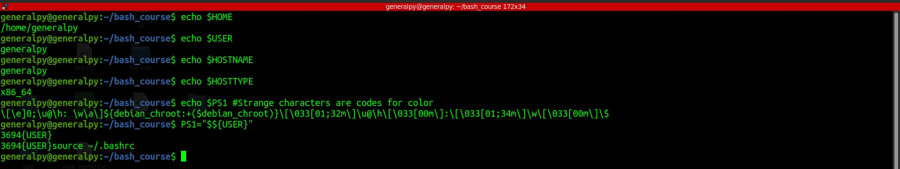

Shell variables are predefined variables which have some special meaning for the shell. They are written in all uppercase.
There are 2 types of shell variables : Bourne shell variables and BASH variables.
Bourne shell was released in 1979 and it contained 10 shell variables. BASH isbased on Bourne shell and it contains original Bourne's shell variables too. In total BASH contains 95 shell variables.
Some common shell variables are :
1. PATH : Contains a list of directory in which executables are stored.
Note that we can get variable's value without using {} and by just writing $variable_name.
2. HOME : Stores current user's home directory absolute path.
3. USER : Stores current user's username.
4. HOSTNAME : Contains current computer's name. This can be used when configuring a network.
5. HOSTTYPE : Stores processor architecture for current system.
6. PS1 : Stores bash terminal prompt string.
